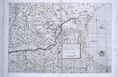

Balkan in kaart
Vijf eeuwen strijd om identiteit
Tentoonstelling van 4 september tot 16 oktober 2003 in de Universiteitsbibliotheek
Samenstelling: Harrie Teunissen en John Steegh
Tentoonstelling
kaarten 1 - 6, 7
- 9, 10 - 19, 20 - 29,
30 - 39, 40 - 47
Tenzij anders vermeld zijn de hier beschreven kaarten en gerelateerde stukken afkomstig uit de ‘Collectie Steegh & Teunissen’, te Leiden. Aan het eind van iedere uitgebreide objectbeschrijving is de naam van de auteur vermeld.
|  | 10. Giacopo di Castaldi: Geographia particulare d'una gran parte dell'Europa, nuovame[n]te descritta co i confini suoi, e prima verso leva[n]te e il meridiano di Consta[n]tinopoli, e da pone[n]te il meridiano della mag(nifi)ca cita di Venetia, et da tramo[n]tana il parallelo di Vienne in Austria, e verso ostro il paralello che passa per il mezzo dell' isola di Candia [...]. | |
|
Opera Nuova di Giacopo di Castaldi. Giacopo di Castaldi (ca 1500-1566) is midden 16e eeuw de grote 'cosmograaf van de Republiek Venetië'. De kaarten van Castaldi, ook die van Zuid-Oost Europa, vormen een belangrijke bron voor Mercator. In 1559-'60 verschijnen in Venetië en Rome de vier bladen van zijn inmiddels zeer zeldzame kaart van Zuid-Oost Europa, de oudste kaart op deze tentoonstelling. Opvallend aan deze Balkan-kaart is dat de vele eilanden in de Egeïsche Zee en de eilandrijke Dalmatische kust weliswaar vergroot maar verder redelijk precies zijn weergegeven. Op grote stukken van het vasteland zijn de verhoudingen echter behoorlijk onnauwkeurig. Deze kaart vormt een prachtige uitdrukking van de positie van de republiek Venetië in de oostelijke helft van de Middellandse Zee. Als na het mislukte beleg van Wenen in 1529 een patstelling ontstaat tussen Ottomanen en Habsburgers blijft de handelsrepubliek Venetië een doorn in de flank van de Porte. De zeeslag bij Lepanto is 12 jaar na de uitgave van deze kaart (vgl. kaart 13). (meer)
|
||
|
11. Erkan-i harbiye da'iresinde be-t-tersim fotolitografiya
usuli üzere tab'-u temsil olunan Bosna vilayeti haritasıdır
sene 1292 (Kaart van de provincie Bosnië, gedrukt en afgebeeld op
fotolithografische basis, getekend op het bureau van de Generale
Staf. Z.p. (Istanboel) 1292 (i.e. 1876-'77)). |
||
| Waarschijnlijk is dit de
laatste kaart die de Ottomaanse militair-topografische dienst heeft
kunnen maken van hun provincie Bosnië. Het jaar na voltooiing wordt
het gebied immers bezet door Oostenrijk-Hongarije. Behalve
militair-strategisch heeft deze ontoegankelijke en dunbevolkte
provincie de Habsburgers weinig te bieden. De weinige steden, zoals
Bosna Serai (Sarajevo) worden door moslims gedomineerd, in dorpen en
valleien wonen wisselend orthodoxen, katholieken en moslims, maar
zelden meerdere geloven in één dorp. Deze fraaie kaart doet het
bergachtige karakter van de provincie goed uitkomen en de
belettering van het Ottomaans-turks in arabische tekens, met lange
halen om hele gebieden te dekken, verleent haar een aparte
schoonheid. (meer)
|
||
| 12. Marele stat major
general al Armatei (capitan Mihail C. If. Pantea), Noul Plan al
Orasului Bucuresti 1921 (Nieuwe plattegrond van de gemeente
Boekarest 1921). Boekarest z.j. (1921). Schaal 1 : 10.000. 95 x 110 cm. (W.2p.15) Als deze plattegrond wordt gemaakt is Boekarest de hoofdstad van een Roemenië dat op het hoogtepunt staat van zijn territoriale expansie. De twintiger jaren |
||
|
heten ook wel de gouden tijd van de stad, haar bijnaam is dan het 'Parijs van het Oosten'. De lange boulevards, op de plattegrond makkelijk te herkennen als doorbraken, zijn gerealiseerd door een architect die in Parijs is opgeleid, na het optreden aldaar van Haussmann. En wie nu rondloopt in het oostelijke deel van de toenmalige stad waant zich in een luxe buitenwijk van het Parijs van dezelfde tijd. De stadsplattegrond is ook te lezen als een treffen tussen Oost en West. De invloed van het Westen is herkenbaar aan de parken, boulevards en 'tuinstadachtige' wijken. Wanneer men echter de posities van de oudste kerken en kloosters analyseert, dan blijken deze op drie lijnen te liggen die elkaar kruisen op de plaats van de oude Georgius-kerk, en waartussen steeds ongeveer 60 graden tussenruimte zit. In die tussenruimtes kronkelen belangrijke uitvalswegen met aaneengesloten bebouwing. (meer)
|
||
| 13. Ali Macar Reis. Kaart
van de Aegeïsche Zee, West-Anatolië en Griekenland. Istanboel
1992. 33 x 46 cm. Facsimile van manuscript-atlas uit 1567. 33 x 46
cm. (N.23)
De manuscript-atlas uit 1567 met 7 dubbelbladige kaarten getekend op velijn die zich bevindt in de |
||
|
bibliotheek van het Topkapi Paleis vormt het hoogtepunt van de nautische kartografie van het Ottomaanse Rijk in de 16e eeuw. Hij is ontworpen door Ali Macar Reis, een Ottomaanse kaper-kapitein. Getoond wordt de prachtige kaart van de regio die Ali Macar Reis het best gekend moet hebben. De kaart heeft kompasrozen verdeeld over zwarte, rode en groene lijnen. De kompasroos in Anatolië geeft de namen van de 32 windrichtingen. De havens zijn vergroot zodat meer details mogelijk zijn. Ondiepten worden aangegeven met rode stippen en rotsen net onder water zijn aangegeven met kruisjes, de standaardpraktijk voor portulaan-kaarten. Vier jaar later raakt Ali Macar Reis gewond in de zeeslag bij Lepanto. (meer)
|
||
| 14. Croatiae & circumiacentiu(m) Regionu(m) versus Turciam nova delineatio (Nieuwe kaart van Kroatië en de omliggende gebieden die tegen Turkije aanliggen). | ||
|
(Toegeschreven aan Cornelius de Iudaeis) Z.p. z.j. (Antwerpen
ca. 1598). Schaal 1 : ca. 930.000. 27 x 34 cm en 27 x 34 cm (UB
Leiden, coll. Bodel Nijenhuis port. Deze zeldzame dubbelkaart van Kroatië en Bosnië met de Habsburgse keizer en de Ottomaanse sultan stamt uit de dertienjarige oorlog, 1593-1606. Een incident aan de grens van Kroatië en Bosnië (een Bosnische pasja wordt gedood bij een strooptocht in Kroatië) wordt door de Porte als casus belli aangegrepen. Op de kaart zijn troepen te zien van Ottomaanse en Oostenrijkse signatuur. Het duidelijkste teken van strijd lijkt om de stad Bihać (Wyhisz) te gaan. Als de persoon die wordt aangeduid als 'R.K.M. efigies' keizer Rudolf II is, dan is de aanbiedende persoon wellicht de lokale bevelhebber (de Ban van Kroatië) die gespiest op een lans het hoofd van de Bosnische pasja Hassan aanbiedt en met de linkerhand diens gebroken kromzwaard. Dat met 'T.K. Contrafattur' de sultan bedoeld is ligt mede gezien de kleding voor de hand. Is de veronderstelling omtrent de andere afbeelding juist, dan zou het Murad III (1574-'95) moeten zijn. (meer) |
||
| 15.Cihan-nüma (kaart van
Bosnië van Katib Çelebi). Onvolledige kopie van een cosmografie
door Mustafa b. 'Abdallah, beter bekend als Katib Çelebi, en Hajji
Khalifa (1609-1657). Kopie is blijkens colofon op f.79a, vervaardigd
door Seyyid Mustafa Sidki in 1203 (1788-'89). (Collectie UB Leiden,
Or. 12.363, ff. 57-58)
Katib Çelebi (1609-1657), was een universeel geleerde die onder meer een algemene cosmografie en geografische beschrijving van de wereld samenstelde, getiteld Cihan-nüma ('Panorama der Wereld'). Die is voornamelijk gebaseerd op middeleeuwse bronnen aangevuld met moderne gegevens. Handschriften hiervan zijn vaak geïllustreerd met kaarten. Dit is ook het geval met dit Leidse handschrift, dat werd |
||
|
vervaardigd in de late 18e eeuw. We zien op de rechter bladzijde een gekleurde kaart met rechtsonder 'een deel van de Venetiaanse Zee' (Adriatische Zee). De bovenkant van de kaart wijst naar het noorden. Landstreken, belangrijke plaatsen, alsmede de 'Bosna rivier' zijn aangegeven in rood. De tekst links geeft een summiere schets van Bosnië, dat in 785 (1383) door sultan Murad II werd veroverd. Voorts beschrijft het monumenten, waaronder een derwisj-klooster, een fort en een overdekte markt, van de hoofdstad Saray (Sarajevo). (meer)
|
||
| 16. Bartelome Camuccio,
Vienna à Turcis obsessa & Deodante a christianis eliberata
(Wenen door de Turken belegerd en van Godswege door de christenen
bevrijd). Wenen 1683. Schaal ca. 1 : 6000. 49 x 54 cm. (UB
Leiden, coll. Bodel Nijenhuis port. 120 nr. 78) Deze fraaie manuscriptkaart van het tweede Ottomaanse beleg van Wenen in 1683 toont de vestingwerken van de stad, de loopgraven van de Ottomanen, de beschietingen van de St. |
||
|
Stephansdom en de vernielde brug over de Donau. Uit de tekst rechtsonder blijkt, dat aan Ottomaanse zijde niet alleen 'Turken', maar ook 'opstandige' Hongaren staan, naast Tartaren, Moldaviërs, Walachen en Transsylvaniërs. Deze troepen staan onder bevel van de 'visirij' (vizier) Kara Mustapha Bassa (pasja). In reactie hierop komt op initiatief van paus Innocentius XI een Oostenrijks-Pools bondgenootschap tot stand. Het internationale leger van Keizerlijken, allerlei Duitse troepen en Polen stormt vanaf de 'Kale Berg' (Kahlenberg) op de belegeraars af. Dit christelijke leger, onder bevel van de Poolse koning Jan Sobieski, strijdt tegen de islam, maar blijkbaar ook tegen die 'opstandige' Hongaren: dat zijn troepen van calvinistische en gematigd-katholieke signatuur die zich juist vanwege de onverzoenlijke houding van het Weense hof en de katholieke clerus met Mustapha verbonden hebben. Binnen een dag (12 september) zijn de Ottomanen op de vlucht gejaagd. (meer)
|
||
| 17. Sanson. Estats de
l'Empire des Turqs en Europe, subdivisés suivant l'Estendüe des
Beglerbegluz ou Gouvernements ... Par Sanson. Parijs Iaillot 1700. Schaal 1 : 3.700.000. 54 x 74 cm. (UB Leiden coll. Bodel Nijenhuis port. 167 nr 5) Deze oudgekleurde kaart over de 'Toestand van het |
||
|
Rijk der Turken in Europa ...' is ontworpen door de 'geographe du roi' Nicolas Sanson in 1655, maar op grotere schaal hertekend en uitgegeven in 1700 door Alexis Hubert Jaillot in zijn 'Atlas Nouveau ...'. Herdrukken leidt tot anachronismen; deze kaart geeft nog steeds Europees Turkije en haar gouvernementen uit 1655 weer. De grens tussen het Habsburgse en het Ottomaanse Rijk is aangegeven door een streepjeslijn (- - -) die dwars door 'Croatie', 'Esclavonie' en 'Hongrie' loopt. Maar in 1700 loopt die grens aanzienlijk zuidelijker. Na het mislukte tweede beleg van Wenen in 1683 moeten de Ottomanen zich tegenover de Liga van Oostenrijk, Polen en Venetië steeds verder terugtrekken. Bij het vredesverdrag van 1699 komt de grens bij de Sava en de Donau te liggen en erkent de sultan de heerschappij van de Habsburgers over Kroatië, Hongarije en Transsylvanië. Ten noorden van de Donau blijft alleen de Banaat ('Beglerbeglic de Temeswar') Ottomaans, maar haar gouvernement van Boeda ('Beglerbeglic de Bude') is passé. (meer)
|
||
| 18. Johann Friedrich
Öttinger: Theatrum belli inter imperat(or) Carol VI et sult(an)
Achmet IV in partibus regnorum Serviae et Bosniae, ex authenticis
subsidiis delineatum a Ioh. Fr. Öttingero […]. (Toneel van de oorlog tussen keizer |
||
| Karel VI en sultan Ahmet
IV in delen van de koninkrijken Servië en Bosnië, getekent op
basis van authentieke bronnen door Joh. Fr. Öttinger […]).
Bestaande uit twee bladen met bladtitels: Regnum Bosniae […] Regni
Serviae pars […]. Erven Homann Neurenberg. z.j. (1738). Schaal ca. 1 : 810.000. 56 x 118 cm. (S.18.1) De kaart geeft een beeld van de oorlog tussen Keizer Karel VI (1711-1740) en Sultan Ahmed IV (dat moet zijn: Mahmûd I, 1730-1754). Rondom de kaart worden plattegronden van 13 steden en afbeeldingen van Zwornek (Zvornik) en Seraglio (Sarajevo) weergegeven. Eén plattegrond, van Ussitza (Ušice, linksboven) verhaalt van strijd om dit stadje. In 1718 bereikt het Habsburgse gebied zijn grootste omvang met de Vrede van Passarowitz. Onder meer het turquoise gebied op de kaart waarin ook Belgrado ligt gaat over in Oostenrijkse handen. Ussitza ligt ten zuiden daarvan, in gebied dat Ottomaans is gebleven. In mei 1737 breekt opnieuw oorlog uit en het stadje wordt in september door de Oostenrijkers veroverd. Niet lang daarna wordt Ussitza echter heroverd door de Ottomanen. Op grond van o. m. de vermelding van de nieuwe opperbevelhebber, graaf Königsegg, kan de kaart gedateerd worden in of na 1737. Het einde van de oorlog wordt bezegeld met de Vrede van Belgrado (1739), waarbij het turquoise gebied op de kaart weer in Ottomaanse handen komt. (meer) |
||
| 19. Weigel, C. & Schneider (Herausg.), Karte der Sämtlichen Vorfaelle bey den vereinigten Oestreichisch-Russischen und Türkischen Armeen im Jahr 1788 nach den besten Karten, Zeichnungen und den Wiener Hofberichten, herausgegeben von (...), Nürnberg 1790. Schaal ca. 1 : 1.425.000. 60 x 81,5 cm. (UB Leiden, coll. Bodel Nijenhuis port. 123 nr 2) | ||
|
De kaart geeft troepenbewegingen, schermutselingen en
veroveringen weer in de campagne van 1788 tijdens de
Ottomaans-Oostenrijks-Russische oorlog van 1787-1792. Het getoonde
gebied loopt van vrijwel de Dalmatische kust (links) tot de Dnjepr,
nu in de Oekraïne (rechts). Dat Oostenrijkers en Russen bondgenoten
zijn is uit de legenda duidelijk op te maken. Te zien is hoe
Oostenrijkse troepen Bosnië en Servië binnenvallen, maar gestopt
worden bij Jaitza (Jajce) in Bosnië. Ook de inval in Walachije komt
niet ver: Craiova (op de kaart Krajova) wordt bedreigd, maar niet
bezet. Anderzijds dringen Ottomanen de oostelijke Banaat binnen en
boeken evenmin resultaat. Meer succes hebben de bondgenoten aan het
oostelijke front, waar ze Moldavië aanvallen, Iasi veroveren en pas
bij Focsani (Fokschan op de kaart) tot staan worden gebracht. Nog
tijdens de oorlog breekt de Franse revolutie uit, reden waarom de
Porte er, ondanks zware nederlagen, relatief goed van af komt.
(meer) |
||
| vorige pagina | volgende pagina |